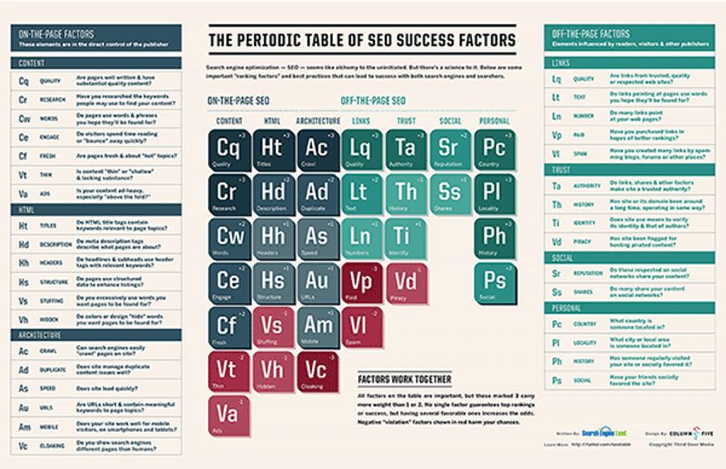

What Is SEO?
SEO stands for “search engine optimization.” It is the process of getting traffic from the “free,” “organic,” “editorial” or “natural” search results on search engines. All major search engines such as Google, Bing and Yahoo have primary search results, where web pages and other content such as videos or local listings are shown and ranked based on what the search engine considers most relevant to users. Payment isn’t involved, as it is with paid search ads. More SEO Advice For Beginners For more basic but also in-depth advice, our Periodic Table Of SEO Success Factors, shown below, introduces you to all the key concepts you need to know:
You can click on the table to view a larger version of it. You can download a copy to print for easy reference!
Search Engine Land’s Guide To SEO
As a companion to the table, Search Engine Land’s Guide To SEO explains the ranking factors in more depth, in a tutorial providing tips and advice on implementing them.
You can view a condensed version of the SEO Table explained in a quick presentation format here:
Links to the entire guide are shown below (start at the beginning, and each page will take you to the next):
• Introduction: Search Engine Land’s Guide To SEO
• Chapter 1: Types Of Search Engine Success Factors
• Chapter 2: Content & Search Engine Success Factors
• Chapter 3: HTML Code & Search Engine Success Factors
• Chapter 4: Site Architecture & Search Engine Success Factors
• Chapter 5: Link Building & Ranking In Search Engines
• Chapter 6: Social Media & Ranking In Search Results
• Chapter 7: Trust, Authority & Search Rankings
• Chapter 8: Personalization & Search Engine Rankings
• Chapter 9: Violations & Search Engine Spam Penalties
More SEO Guides & Books
Another excellent guide is Google’s “Search Engine Optimization Starter Guide.” This is a free PDF download that covers basic tips that Google provides to its own employees on how to get listed. You’ll find it here. Also well worth checking out is Moz’s “Beginner’s Guide To SEO,” which you’ll find here, and the SEO Success Pyramid from Small Business Search Marketing.
Daily SEO News & Expert SEO Advice
In addition to daily news stories from our editorial staff, Search Engine Land publishes daily articles from expert contributors that cover SEO issues mainly from an in-the-trenches perspective. Browse the SEO Channel for the most recent SEO news stories and expert columns, or sign up to receive all of our SEO related content via email.
Search Engine Land’s SEO Library
The SEO Library is an area within Search Engine Land that provides a collection of all stories we’ve written on the topic of SEO. We also have sub-categories, including:
• SEO: Blocking Spiders
• SEO: Blogs & Feeds
• SEO: Cloaking & Doorway Pages
• SEO: Domain Names & URLs
• SEO: Duplicate Content
• SEO: Flash
• SEO: General
• SEO: Image Search
• SEO: Local
• SEO: Mobile Search
• SEO: Redirects & Moving Sites
• SEO: Spamming
• SEO: Submitting & Sitemaps
• SEO: Tagging
• SEO: Titles & Descriptions
• SEO: Video Search
• SEO: Writing & Body Copy
Also see our related Link Building category and these sub-categories:
• Link Building: Link Bombs
• Link Building: Linkbait
• Link Building: Paid Links
In addition to covering SEO generally, Search Engine Land also has search engine optimization areas specifically for each of the major search engines:
• Google SEO
• Bing SEO
• Yahoo SEO
Also within our library is the How To: SEO section, which is devoted to practical tips and tactics about search engine optimization. Get SEO News & Advice Delivered To Your Inbox Subscribe to our weekly SEO and daily SearchCap newsletters for a recap of all the latest SEO related news, tips and tactics from Search Engine Land and other sources all over the Web. http://searchengineland.com/guide/what-is-seo